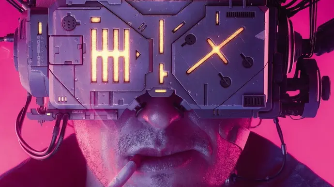

	<h4 class="cyber-h">
		.Lucas Nobre Ferreira Martins <code>.administrator</code>
	</h4>
<div class="home">
	<div class="corpo">
		<div class="imagem_home">
			
		</div>
		<div class="cyber-tile bg-green fg-white cyber-glitch-2">
			<label>
	Estamos fazendo o possivel para o melhor futuro?
	Que futuro queremos?
	Eu sonho com distopias e realidades super tecnológicas.
	Fico triste em não poder acordar viajar de teleporte, ir para outro planeta, regular meu implante cibernetico, quem sabe?
	É triste viver em uma época em que pessoas tenham duvida sobre o formato da TERRA.<br>
	Enfim, esse espaço é para organizar conhecimento e pensamentos. Espero que seja de bom uso para quem chegue aqui.<br>
	O layout pode ser modificado e funcionalidades adicionadas conforme os estudos se avancem.
			</label>
		</div>
	</div>
</div>
